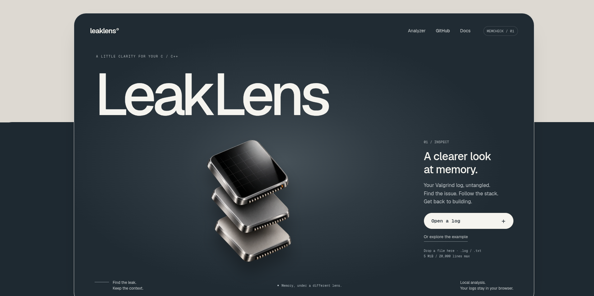
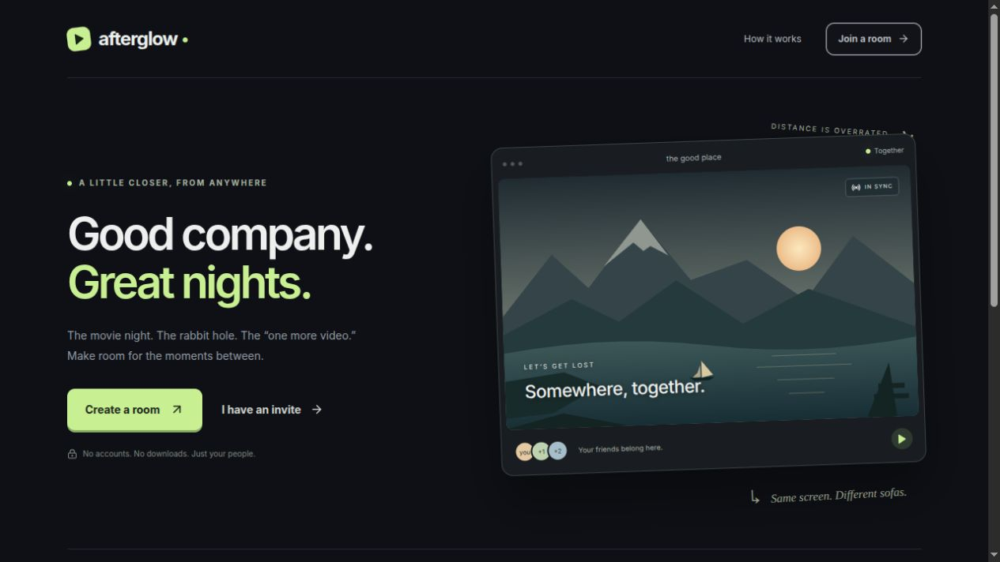

01 / DEVELOPER TOOLS
LeakLens
Your Valgrind log,
untangled.
- Valgrind
- Memory debugging
- Browser-based analysis

Inspect a log. Follow the stack. Compare runs. ↗Hello! I’m
My background connects mathematics and computer science with hands-on software development. At 1337, I learn through projects, peer review and collaborative work.
I’ve worked on parsing, processes, memory management and containerized services. I’m looking for opportunities to apply that foundation, keep learning and contribute to a team.
Software Engineering Program
Degree in Mathematics and Computer Science
C · C++ · Python · Docker · Git · Valgrind
Arabic · English · French
42 projects and independent developer tools.
PROJECT EXPLORER
From browser tools to systems ideas.
Pick a project and take a closer look.
5 projects to explore
No projects match this search.
Try a technology such as React or C++, or clear the filters to see all five projects.Your Valgrind log,
untangled.

Inspect a log. Follow the stack. Compare runs. ↗Good company.
Great nights.
Create a room and invite up to five friends without accounts. Socket.IO synchronizes playback, chat and room state; WebRTC carries voice and shared screens between participants. Reconnection handling and host controls keep the session coordinated.

Watch together. Share a screen. Stay connected. ↗Many clients.
One conversation.
Clients authenticate with PASS, NICK and USER, then JOIN a channel. PRIVMSG delivers a message to its other members. A poll() loop handles socket readiness; input and output buffers preserve partial reads and writes.
PRIVMSG #systems :Hello!\r\nType a message. The server routes it to the other client.
PASS → NICK → USER → JOIN #systems
Local JavaScript simulation · no public chat server. The repository contains the C++ socket implementation.
Small, interactive models of systems ideas.
Enter numbers. Watch two stacks turn a constraint into a sorted result.
JavaScript minimum-first model using valid stack operations. The C repository uses a cost-based strategy; these move counts are separate.
See the C implementation and measured benchmark →Shared forks, competing workers. Change the timings and watch starvation emerge.
Deterministic JavaScript simulation with atomic two-fork acquisition. It illustrates contention; the C project uses real threads and mutexes.
Read the concurrency study →I’d like to hear about C/C++ and systems engineering roles and internships.
LinkedIn